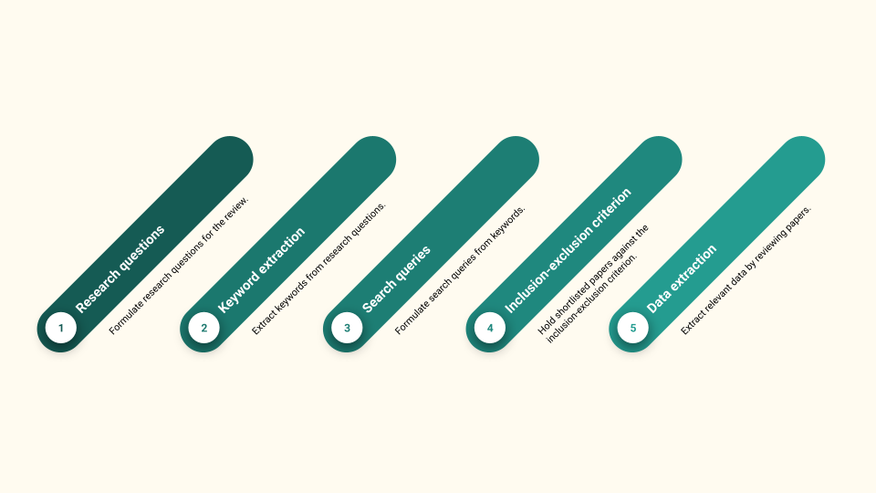
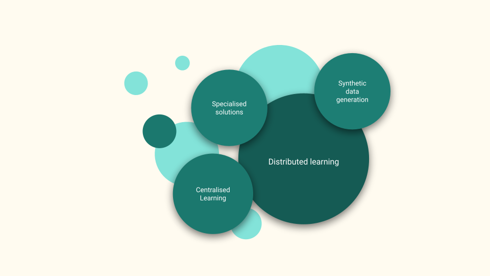
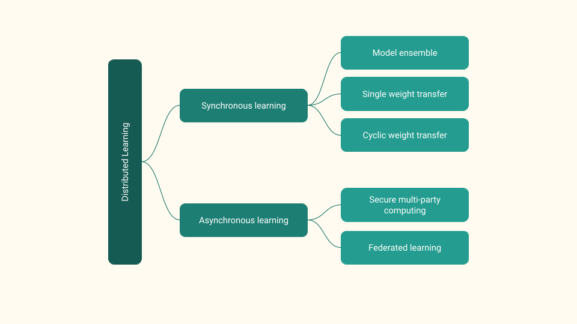
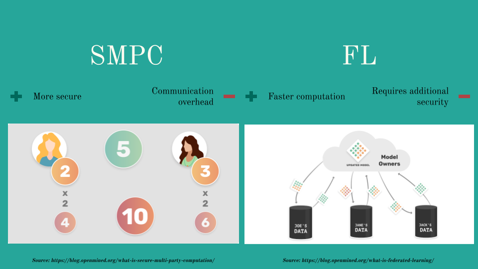
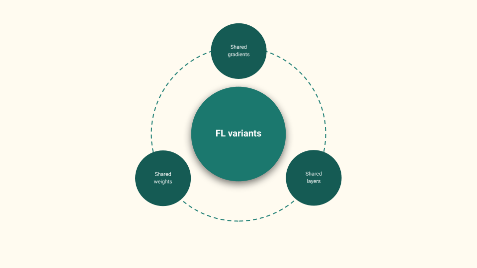
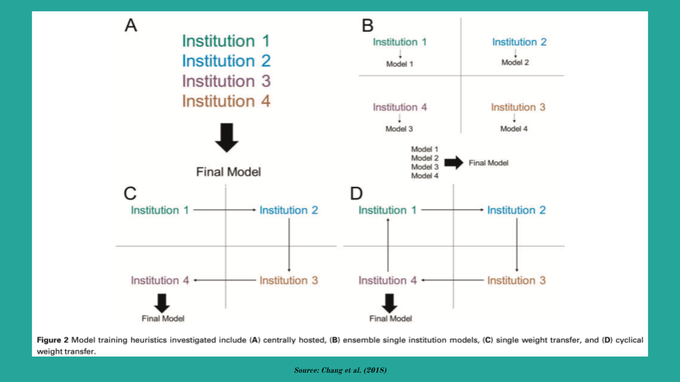
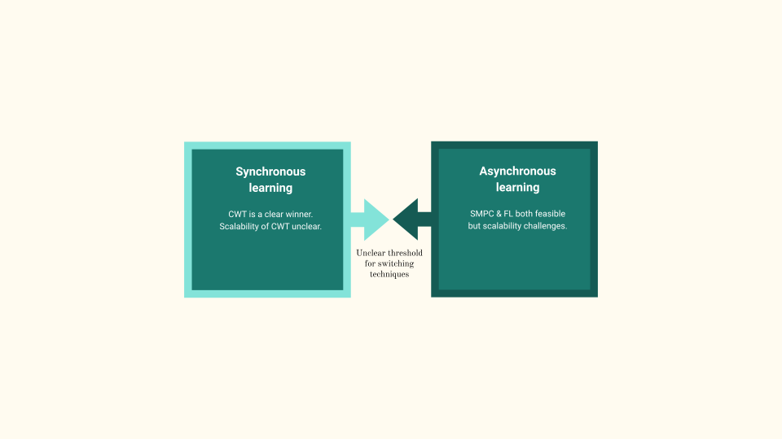
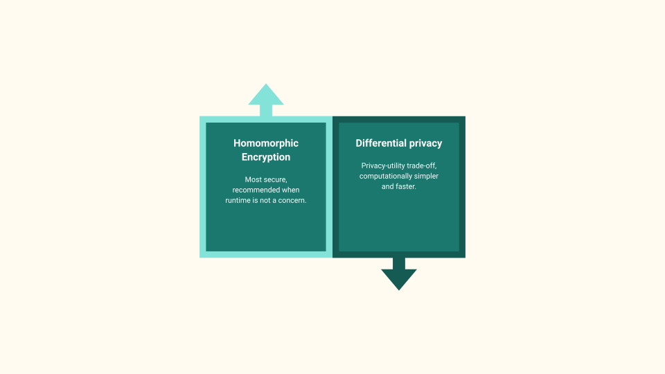
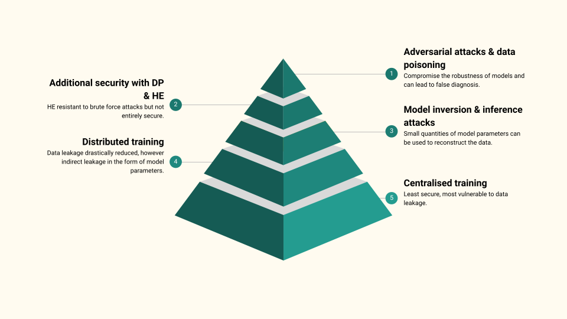
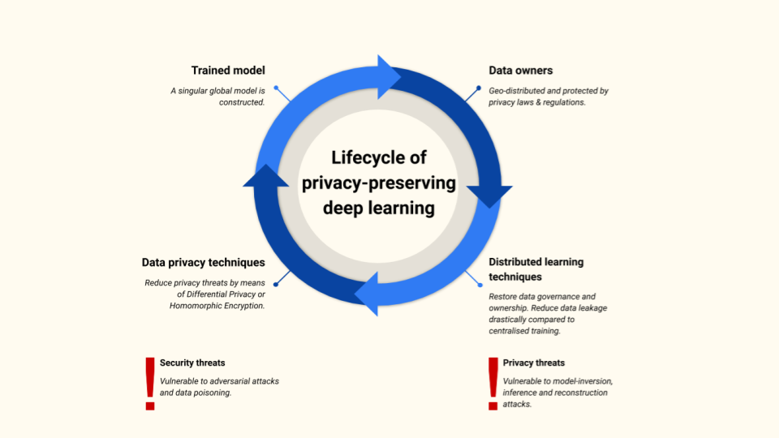

Privacy Preserving Deep Learning
2021-09-07
Good morning all, thank you for being here. Today I wanted to share my research on Privacy Preserving Deep Learning (PPDL) which I conducted during my Msc. As an example, we will be looking specifically at PPDL for Medical Image Analysis (MIA). However, I think that this field of research is highly relevant these days and the techniques can be applied to any domain working with sensitive data (such as governance, finance and others).
Introduction
Medical Imaging is the process of generating an internal representation of a human body (using MRI, CT or PET scans) for further analysis in order to detect anomalies (if any exist).
Challenges of MIA
MIA concerns itself with the study of medical images in order to determine Regions of Interest(ROI) and image segmentation. MIA is usually performed by radiologists and requires intensive training and practise. For each patient, a radiologist may have to inspect more than 100 images. This is a repetitive task and may pose a cognitive strain, making the process prone to human errors.
MIA is limited by the skills and cognitive fitness of the human performing the analysis. While humans may not be so good in performing repetitive tasks, machine will do them tirelessly and consistently.
This is where Deep Learning (DL) comes into the picture. DL gained popularity and momentum both in the industry and academia due to it’s success with image classification through the ImageNet challenge. It was soon adopted not only within MIA but also other fields of medical science. Although this is an active field of research, several challenges remain. One of the challenges is to train DL models without violating the privacy of the patients.
Challenges of DL in MIA
DL models require a lot of data for training, generally the more data used, better the prediction results. However, this quantity of data may not always be available at a single medical institute (for instance at small hospitals located in remote locations). Larger institutes who have sufficient data are able to train models however these models are subjected to bias. This is because the data does not accurately represent the entire population. Moreover, if the institute is specialized in a specific disease or observes a disease more frequently due to it’s unique geographic location, the data is biased.
Thus DL models need to be trained using data from several institutes. The traditional server-client architecture posses several privacy and security concerns. Once the institutes upload their data to a server, they may lose their data governance and ownership rights as the server may be located in a different geographical location with a different set of jurisdictions. The data upload and storage procedure may also not be transparent thus raising concerns regarding it’s safety and security.
Although efforts have been made to create centralized medical data repositories (eICU Collaborative Research Database and The Cancer Genome Atlas), data privacy laws such as GDPR in Europe and HIPAA in the State pose a large overhead. The data in such repositories are anonymised, but this does not guarantee security against privacy leaks. Datasets have a unique statistical fingerprint making them vulnerable to linkage attacks.
Distributed Learning addresses the data ownership and governance problems of centralised learning. However, it still needs to utilise data privacy and security techniques to ensure privacy of patient records. In the following sections of this talk we will take a closer look at Distributed Learning and data privacy techniques for PPDL.
Study Design

The goal of this research project was to conduct a systematic review of DL systems for MIA which take the privacy of the patients into account. The figure above presents an overview of the study design. Emphasis was also put on analysis of these privacy-preserving techniques to determine those which provide good performance, are scalable and robust, and provide maximum protection against security threats. To this end, the following research questions are formulated:
- What are the existing systems, platforms or techniques that facilitate deep learning on medical images that do not invade the patient’s privacy?
- What are the top performing DL models being used to perform tasks in medical imaging?
- What are the specific attacks that can compromise the security of these systems?
- What is the amount of data leakage in these systems?
Background
Data Privacy Techniques
To date, anonymisation and de-identification remain the predominant privacy-preserving technique for sharing sensitive information. Although there are not standardised methods of doing so, we commonly see 3 techniques in the literature:
- De-identification or removal of sensitive information from datasets. This is not the best solution since it results in loss of valuable information which may be useful for analysis/training.
- Pseudo-anonymisation which replaces sensitive information with unique pseudonyms. This is a bit better since we retain the unique linkages and correlations between data points which may be of interest to us.
- Anonymisation which simply put means de-identification with a cherry on top. A few additional things are done on top of de-identification to significantly reduce the probability of re-identification.
Differential Privacy (DP) preserves the privacy of patients by injecting a certain quantity of noise into the data. This allows for statistical analysis to be conducted without compromising sensitive information. A trade-off between privacy and performance occurs here. More perturbations in the dataset give higher privacy however may negatively affect the model’s performance.
The alternative is to encrypt the data or the model parameters. The state-of-the-art encryption schemes cannot be cracked using brute force techniques making them the most secure means of sharing sensitive information. The Homomorphic Encryption (HE) scheme allows certain operations (such as addition, subtraction and multiplication) to be carried out directly over the cyphertext. This is beneficial for neural networks as models can be trained directly using encrypted, unperturbed data with additional computational overhead.
Security Threats & Attacks
Anonymisation techniques are built into MIA software which may explains their popularity. However, anonymised data contain unique statistical fingerprints which make them vulnerable to linkage attacks. A famous example is the Netflix Prize Dataset where researchers were able to combine Netflix’s anonymised user subscription data with the imdb public dataset to identify specific people along with their political preferences and other sensitive information. Another well known example is linkage attack on anonymised hospital records from the State of California along with public voter records to identify the complete medical history of the Governor of California.
In traditional software, computers strictly follow a specific set of programmed instructions. In contrast, ML algorithms derive their own set of rules based on a substantial amount of data provided to them. This behaviour often leads to neural networks being interpreted as a black box, preventing users from understanding it’s inner workings. This black box behavior makes neural networks a potential target for exploitation. This identification of such threats and vulnerabilities must be prioritised.
These threats can be classified as ones targeting the data and others targeting the model. Adversarial examples are inputs that are often indistinguishable from typical inputs, yet contain intentional feature changes that lead to incorrect classification. Adversarial attacks are of significance since they question the robustness of DL models. They can have devastating consequences for DL applications in high-stakes applications such as medical imaging, facial recognition and autonomous vehicles.
Data poisoning refers to changing the training data such that the model can learn with malicious intent and manifest that as it’s predictions. Open access and public datasets are especially vulnerable to data poisoning. Such datasets are often used to validate proof-of-concept models by companies or worse, to validate bleeding edge innovations in research.
In addition to attacks which target the data, the DL model itself can be exploited. By observing the gradients and parameters of a trained network, parts of the dataset can be obtained. Model inversion, membership inference and reconstruction attacks often utilise this technique to obtain the training data or infer if a public dataset was used for training. Combined with linkage attacks, the presence of an individual in a dataset and their sensitive information can be obtained.
Results


The study identified 15 papers that presented techniques to train DL models using sensitive data (summarised above). The techniques can be broadly classified as:
- centralised training,
- synthetic data generation and
- distributed training.
The majority of the solutions adopted a distributed training approach and this is what the rest of the talk will focus upon.
As seen above, distributed training can be broadly categorised as
- asynchronous and
- synchronous training techniques.


The figures above provide a high-level overview of the asynchronous techniques. There are predominantly two popular techniques: Federated Learning (FL) and Secure Multi Party Computing (SMPC). Both techniques share the same guiding principles. Several models are training in parallel using the institute’s data. The parameters of these models are then aggregated, usually in a central server, and finally the aggregated parameters are sent back to the local models.
It’s worth nothing that all asynchronous training techniques introduce additional data privacy through DP or HE to reduce data leakage.
There are several flavours of FL (as seen in the FL variants figure above), the most popular being shared gradients and shared weights. However, there is a third which shows promising results and that is the shared layers. We will talk more about FL with shared layers later in the talk.

The figure above presents the three prominent synchronous training techniques:
- model ensemble (ME)
- single weight transfer (SWT) and
- cyclic weight transfer (CWT)
In ME, models are trained individually at institutes and a final result is obtained using an ensemble technique (voting, averaging, etc.). In SWT, a single model is trained at each institute only once in a pre-determined or random order. CWT extends SWT by training the model at each institute one or more times.
Empirical evidence suggests that CWT has the best performance and robust to overfitting. SWT performs second best but is prone to catastrophic forgetting and ME is least performant.
Discussion


As summarised in the figures above, we observe a trade-off between synchronous and asynchronous learning. Occam’s Razor dictates that CWT being the simpler solution be chosen where possible. However, as we scale the number of institutes, after a certain threshold, the added complexity of asynchronous learning becomes feasible. This threshold is however unknown. Research is also lacking to determine the scalability of asynchronous learning techniques.
Coming to data privacy techniques, DP and HE are observed to be the most popular techniques for data privacy. DP introduces a trade-off between the model’s performance by injecting noise into the parameters for better privacy.
In contrast, HE enables model training over unperturbed and encrypted parameters. The performance-privacy trade-off is lifted in lieu of added computational costs. It is recommended to use HE when privacy is of the utmost importance and runtime is not of significant.

The figure above presents an overview of the findings of this literature survey. Distributed Learning is able to drastically reduce the data leakage compared to centralised learning however they are still vulnerable to model inversion and inference attacks. Additional security can be provided using DP and HE for the model parameters. HE is resistant to brute force attacks. However if an attacker obtains a significant quantity of the plaintext and the corresponding cyphertext, the encryption can be cracked. Even if we secure the model parameters, the data itself is still vulnerable to adversarial attacks and data poisoning.
PPDL is felt to be paradoxical in nature. Although the field aims to develop learning techniques which respect the patient’s privacy, such data is not easily available. The existing research is thus limited to experiments conducted using centralised data repositories which do not accurately represent the domain shift which is observed in a truly distributed dataset. The result is also limited primarily to MLPs and CNNs using SGD to perform classification tasks. There is need for training other network architectures (GNNs and RNNs) using modern optimization algorithms such as AdaGrad, Adam and RMSProp.
If such a distributed system is built, the ownership of such a system is unclear. Who would be responsible for it’s construction and maintenance? How will the project be funded? And where will the parameter server be located? Such a project requires a joint initiative from all participating institutes but also warrants the development of legislative policies to ensure a fair and conflict free operation. Small medical institutes have the most to gain from such an infrastructure however concerns regarding their access is raised since they are unable to participate.
Conclusion

We observe the following lifecycle of PPDL, summarised in the figure above. We start with data owners who are geographically distributed and protected by different privacy laws & regulations. We can use distributed learning techniques which result in a better model performance without compromising data ownership and drastically reducing data leakage compared to centralised learning. The risks of inversion and inference attacks can be minimised with data privacy techniques however we must also safeguard the data itself as it’s vulnerable to adversarial attacks and data poisoning.
Future Work
I want to end this talk by highlighting some of the interesting opportunities of research in PPDL.
FL with shared gradients or weights communicate twice: once to send the local parameters and again to download the aggregated parameters. Scaling the number of participants of increasing the depth of the networks raises several challenges. In the shared layers scheme, the local models have the input and the first hidden layer (Linput & L1). The remaining hidden layers are kept in the central server (L2..Ln). Although the local models communicate twice as much, since they only transmit the parameters of a single layer (as opposed to the entire model), the communication overhead is significantly reduced. Since majority of the layers reside in a central server, hardware upgrades are only required in the central server for performance gains. Empirical results are however lacking to compare and contrast them with shared gradients.
By and large, Medical Imaging data such as MRI and CT scans, are volumetric in nature. The state-of-the-art solutions require the three dimensional data be segmented into a two dimensional format, resulting in loss of valuable information. Geometric Deep Learning (GDL) is a new field of research, focused on developing deep learning models which are able to train using volumetric data. As such, the application of GDL to MIA remains open for further investigation.
The exact inner workings of neural networks are still unclear, thereby raising serious ethical concerns regarding their application in medical science. Hybrid intelligence is a new field of research which seeks to enhance the human intellect using artificial intelligence, rather than replacing it. Additionally, Bayesian Deep Learning is another exciting field of research which is tasked with the creation of DL models that provide a measure of uncertainty to the predictions they make. Developments in these field may be beneficial to privacy-preserving deep learning since it will enable humans to view the outcomes of neural networks with a sense of trust.